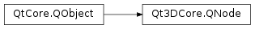

Qt3DCore.QNode¶
Inherited by: Qt3DInput.QAxis, Qt3DInput.QAxisSetting, Qt3DCore.QAbstractSkeleton, Qt3DCore.QSkeleton, Qt3DCore.QSkeletonLoader, Qt3DRender.QRenderState, Qt3DRender.QMultiSampleAntiAliasing, Qt3DRender.QNoDepthMask, Qt3DRender.QSeamlessCubemap, Qt3DRender.QAlphaCoverage, Qt3DRender.QAlphaTest, Qt3DRender.QStencilMask, Qt3DRender.QBlendEquation, Qt3DRender.QBlendEquationArguments, Qt3DRender.QLineWidth, Qt3DRender.QClipPlane, Qt3DRender.QColorMask, Qt3DRender.QScissorTest, Qt3DRender.QFrontFace, Qt3DRender.QPolygonOffset, Qt3DRender.QCullFace, Qt3DRender.QDepthTest, Qt3DRender.QDithering, Qt3DRender.QStencilOperation, Qt3DRender.QStencilTest, Qt3DRender.QPointSize, Qt3DCore.QComponent, Qt3DRender.QObjectPicker, Qt3DInput.QAxisAccumulator, Qt3DRender.QShaderData, Qt3DRender.QGeometryRenderer, Qt3DExtras.QCylinderMesh, Qt3DExtras.QPlaneMesh, Qt3DExtras.QSphereMesh, Qt3DExtras.QExtrudedTextMesh, Qt3DExtras.QTorusMesh, Qt3DRender.QMesh, Qt3DExtras.QConeMesh, Qt3DExtras.QCuboidMesh, Qt3DLogic.QFrameAction, Qt3DRender.QLayer, Qt3DRender.QAbstractLight, Qt3DRender.QSpotLight, Qt3DRender.QDirectionalLight, Qt3DRender.QPointLight, Qt3DRender.QLevelOfDetail, Qt3DRender.QLevelOfDetailSwitch, Qt3DRender.QRenderSettings, Qt3DRender.QAbstractRayCaster, Qt3DRender.QScreenRayCaster, Qt3DRender.QRayCaster, Qt3DInput.QMouseHandler, Qt3DCore.QTransform, Qt3DRender.QRenderTarget, Qt3DRender.QEnvironmentLight, Qt3DRender.QSceneLoader, Qt3DRender.QComputeCommand, Qt3DAnimation.QAbstractClipAnimator, Qt3DAnimation.QBlendedClipAnimator, Qt3DAnimation.QClipAnimator, Qt3DInput.QInputSettings, Qt3DInput.QKeyboardHandler, Qt3DCore.QArmature, Qt3DRender.QCameraLens, Qt3DInput.QLogicalDevice, Qt3DRender.QMaterial, Qt3DExtras.QPhongMaterial, Qt3DExtras.QDiffuseMapMaterial, Qt3DExtras.QDiffuseSpecularMapMaterial, Qt3DExtras.QDiffuseSpecularMaterial, Qt3DExtras.QTextureMaterial, Qt3DExtras.QMetalRoughMaterial, Qt3DExtras.QGoochMaterial, Qt3DExtras.QMorphPhongMaterial, Qt3DExtras.QNormalDiffuseMapMaterial, Qt3DExtras.QNormalDiffuseSpecularMapMaterial, Qt3DExtras.QPerVertexColorMaterial, Qt3DExtras.QPhongAlphaMaterial, Qt3DRender.QShaderProgramBuilder, Qt3DInput.QAbstractActionInput, Qt3DInput.QInputChord, Qt3DInput.QInputSequence, Qt3DInput.QActionInput, Qt3DInput.QAbstractPhysicalDevice, Qt3DInput.QMouseDevice, Qt3DInput.QKeyboardDevice, Qt3DRender.QAttribute, Qt3DAnimation.QAbstractClipBlendNode, Qt3DAnimation.QLerpClipBlend, Qt3DAnimation.QAdditiveClipBlend, Qt3DInput.QAbstractAxisInput, Qt3DInput.QAnalogAxisInput, Qt3DInput.QButtonAxisInput, Qt3DInput.QAction, Qt3DRender.QFrameGraphNode, Qt3DRender.QTechniqueFilter, Qt3DExtras.QForwardRenderer, Qt3DRender.QClearBuffers, Qt3DRender.QNoDraw, Qt3DRender.QSortPolicy, Qt3DRender.QLayerFilter, Qt3DRender.QRenderPassFilter, Qt3DRender.QRenderStateSet, Qt3DRender.QRenderSurfaceSelector, Qt3DRender.QRenderTargetSelector, Qt3DRender.QFrustumCulling, Qt3DRender.QProximityFilter, Qt3DRender.QViewport, Qt3DRender.QDispatchCompute, Qt3DRender.QRenderCapture, Qt3DRender.QBlitFramebuffer, Qt3DRender.QBufferCapture, Qt3DRender.QMemoryBarrier, Qt3DRender.QCameraSelector, Qt3DRender.QRenderTargetOutput, Qt3DRender.QEffect, Qt3DExtras.QAbstractSpriteSheet, Qt3DExtras.QSpriteGrid, Qt3DExtras.QSpriteSheet, Qt3DRender.QAbstractTexture, Qt3DRender.QTexture1DArray, Qt3DRender.QTexture2D, Qt3DRender.QTexture2DArray, Qt3DRender.QTexture3D, Qt3DRender.QTextureCubeMap, Qt3DRender.QTextureCubeMapArray, Qt3DRender.QTexture2DMultisample, Qt3DRender.QTexture2DMultisampleArray, Qt3DRender.QTextureRectangle, Qt3DRender.QTextureBuffer, Qt3DRender.QTextureLoader, Qt3DRender.QTexture1D, Qt3DRender.QAbstractTextureImage, Qt3DRender.QPaintedTextureImage, Qt3DRender.QTextureImage, Qt3DRender.QFilterKey, Qt3DAnimation.QAbstractAnimationClip, Qt3DRender.QGeometry, Qt3DExtras.QCylinderGeometry, Qt3DExtras.QPlaneGeometry, Qt3DExtras.QSphereGeometry, Qt3DExtras.QExtrudedTextGeometry, Qt3DExtras.QTorusGeometry, Qt3DExtras.QConeGeometry, Qt3DExtras.QCuboidGeometry, Qt3DCore.QEntity, Qt3DExtras.QSkyboxEntity, Qt3DExtras.QText2DEntity, Qt3DExtras.QAbstractCameraController, Qt3DExtras.QFirstPersonCameraController, Qt3DExtras.QOrbitCameraController, Qt3DRender.QCamera, Qt3DCore.QJoint, Qt3DRender.QParameter, Qt3DRender.QPickingSettings, Qt3DRender.QShaderProgram, Qt3DRender.QRenderPass, Qt3DRender.QBuffer, Qt3DExtras.QSpriteSheetItem, Qt3DRender.QTechnique
Synopsis¶
Functions¶
- def
blockNotifications(block) - def
childNodes() - def
clearPropertyTracking(propertyName) - def
clearPropertyTrackings() - def
defaultPropertyTrackingMode() - def
id() - def
isEnabled() - def
notificationsBlocked() - def
notifyObservers(change) - def
parentNode() - def
propertyTracking(propertyName) - def
sendReply(command) - def
setPropertyTracking(propertyName, trackMode)
Virtual functions¶
- def
sceneChangeEvent(change)
Slots¶
- def
setDefaultPropertyTrackingMode(mode) - def
setEnabled(isEnabled) - def
setParent(parent)
Signals¶
- def
defaultPropertyTrackingModeChanged(mode) - def
enabledChanged(enabled) - def
nodeDestroyed() - def
parentChanged(parent)
Detailed Description¶
QNodeis the base class of all Qt3D node classes used to build a Qt3D scene.The owernship of
QNodeis determined by thePySide2.QtCore.QObjectparent/child relationship between nodes. By itself, aQNodehas no visual appearance and no particular meaning, it is there as a way of building a node based tree structure.The parent of a
QNodeinstance can only be anotherQNodeinstance.Each
QNodeinstance has a unique id that allows it to be recognizable from other instances.When properties are defined on a
QNodesubclass, their NOTIFY signal will automatically generate notifications that the Qt3D backend aspects will receive.See also
-
class
PySide2.Qt3DCore.Qt3DCore.QNode([parent=nullptr])¶ Parameters: parent – PySide2.Qt3DCore.Qt3DCore::QNodeCreates a new
QNodeinstance with parentparent.Note
The backend aspects will be notified that a
QNodeinstance is part of the scene only if it has a parent; unless this is the root node of the Qt3D scene.See also
PySide2.Qt3DCore.Qt3DCore::QNode.setParent()
-
PySide2.Qt3DCore.Qt3DCore.QNode.PropertyTrackingMode¶
-
PySide2.Qt3DCore.Qt3DCore.QNode.blockNotifications(block)¶ Parameters: block – PySide2.QtCore.boolReturn type: PySide2.QtCore.boolIf
blockistrue, property change notifications sent by this object to aspects are blocked. Ifblockisfalse, no such blocking will occur.The return value is the previous value of
PySide2.Qt3DCore.Qt3DCore::QNode.notificationsBlocked().Note that the other notification types will be sent even if the notifications for this object have been blocked.
See also
PySide2.Qt3DCore.Qt3DCore::QNode.notificationsBlocked()
-
PySide2.Qt3DCore.Qt3DCore.QNode.childNodes()¶ Return type: Returns a list filled with the
QNodechildren of the currentQNodeinstance.
-
PySide2.Qt3DCore.Qt3DCore.QNode.clearPropertyTracking(propertyName)¶ Parameters: propertyName – unicode
-
PySide2.Qt3DCore.Qt3DCore.QNode.clearPropertyTrackings()¶
-
PySide2.Qt3DCore.Qt3DCore.QNode.defaultPropertyTrackingMode()¶ Return type: PySide2.Qt3DCore.Qt3DCore::QNode.PropertyTrackingModeSee also
PySide2.Qt3DCore.Qt3DCore::QNode.setDefaultPropertyTrackingMode()
-
PySide2.Qt3DCore.Qt3DCore.QNode.defaultPropertyTrackingModeChanged(mode)¶ Parameters: mode – PySide2.Qt3DCore.Qt3DCore::QNode.PropertyTrackingMode
-
PySide2.Qt3DCore.Qt3DCore.QNode.enabledChanged(enabled)¶ Parameters: enabled – PySide2.QtCore.bool
-
PySide2.Qt3DCore.Qt3DCore.QNode.id()¶ Return type: PySide2.Qt3DCore.Qt3DCore::QNodeIdReturns the id that uniquely identifies the
QNodeinstance.
-
PySide2.Qt3DCore.Qt3DCore.QNode.isEnabled()¶ Return type: PySide2.QtCore.bool
-
PySide2.Qt3DCore.Qt3DCore.QNode.nodeDestroyed()¶
-
PySide2.Qt3DCore.Qt3DCore.QNode.notificationsBlocked()¶ Return type: PySide2.QtCore.boolReturns
trueif aspect notifications are blocked; otherwise returnsfalse. By default, notifications are not blocked.See also
PySide2.Qt3DCore.Qt3DCore::QNode.blockNotifications()
-
PySide2.Qt3DCore.Qt3DCore.QNode.notifyObservers(change)¶ Parameters: change – PySide2.QtQuick.QSharedPointerSends the
changeQSceneChangePtrto any QBackendNodes in the registered aspects that correspond to thisQNode.For the common case of a
PySide2.QtCore.QObjectproperty change,QNodehandles this for you automatically by sending aQPropertyUpdatedChangeevent to the backend nodes. You only need to call this function if you wish to send a specific type of change in place of the automatic handling.
-
PySide2.Qt3DCore.Qt3DCore.QNode.parentChanged(parent)¶ Parameters: parent – PySide2.QtCore.QObject
-
PySide2.Qt3DCore.Qt3DCore.QNode.parentNode()¶ Return type: PySide2.Qt3DCore.Qt3DCore::QNode
-
PySide2.Qt3DCore.Qt3DCore.QNode.propertyTracking(propertyName)¶ Parameters: propertyName – unicode Return type: PySide2.Qt3DCore.Qt3DCore::QNode.PropertyTrackingModeSee also
PySide2.Qt3DCore.Qt3DCore::QNode.setPropertyTracking()
-
PySide2.Qt3DCore.Qt3DCore.QNode.sceneChangeEvent(change)¶ Parameters: change – PySide2.QtQuick.QSharedPointerCalled when one or more backend aspects sends a notification
changeto the currentQt3DCore.QNodeinstance.Note
This method should be reimplemented in your subclasses to properly handle the
change.
-
PySide2.Qt3DCore.Qt3DCore.QNode.sendReply(command)¶ Parameters: command – PySide2.QtQuick.QSharedPointerSend a
commandback to the backend node.Assumes the command is to be to sent back in reply to itself to the backend node.
See also
QNodeCommandQNode.sendCommand
-
PySide2.Qt3DCore.Qt3DCore.QNode.setDefaultPropertyTrackingMode(mode)¶ Parameters: mode – PySide2.Qt3DCore.Qt3DCore::QNode.PropertyTrackingModeSee also
PySide2.Qt3DCore.Qt3DCore::QNode.defaultPropertyTrackingMode()
-
PySide2.Qt3DCore.Qt3DCore.QNode.setEnabled(isEnabled)¶ Parameters: isEnabled – PySide2.QtCore.boolSee also
PySide2.Qt3DCore.Qt3DCore::QNode.isEnabled()
-
PySide2.Qt3DCore.Qt3DCore.QNode.setParent(parent)¶ Parameters: parent – PySide2.Qt3DCore.Qt3DCore::QNode
-
PySide2.Qt3DCore.Qt3DCore.QNode.setPropertyTracking(propertyName, trackMode)¶ Parameters: - propertyName – unicode
- trackMode –
PySide2.Qt3DCore.Qt3DCore::QNode.PropertyTrackingMode
See also
PySide2.Qt3DCore.Qt3DCore::QNode.propertyTracking()
© 2018 The Qt Company Ltd. Documentation contributions included herein are the copyrights of their respective owners. The documentation provided herein is licensed under the terms of the GNU Free Documentation License version 1.3 as published by the Free Software Foundation. Qt and respective logos are trademarks of The Qt Company Ltd. in Finland and/or other countries worldwide. All other trademarks are property of their respective owners.